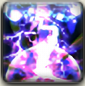

흑마도사는 화염, 얼음, 전기의 세가지 속성을 다룹니다.
이 속성들에 대한 간단한 개념을 정리해두었습니다.
각 기술들의 자세한 설명은 파이널판타지14 공식 사이트를 참고해주세용!
*화염*
파이어, 파이쟈와 같은 주요 딜링기의 속성입니다!
최대한 화염 속성에 오래 머물며 딜에 집중하는것이 흑마도사의 역할입니다.
흑마도사, 라고 하면 주로 떠올리는 주요 속성입니다.
*얼음*
다른 직업군과 달리 흑마도사가 자원을 무한하게 쓸수있도록 해주는 속성입니다.
얼음 속성 기술들은 딜계수가 낮기 때문에 주요 딜링기로 사용하지 않습니다.
그러나 자원이 없으면 딜도 할 수 없으므로 얼음 속성 역시 중요한 속성입니다.
*전기*
흑마도사의 절친, 백마도사의 바람 속성에 대응되는 속성입니다.
화염이나 얼음처럼 주요 속성은 아니지만 일정시간동안 적에게 꾸준히 데미지를 입히는 도트 기술들이 이 속성에 속합니다.
꾸준히 발라줍시다!
